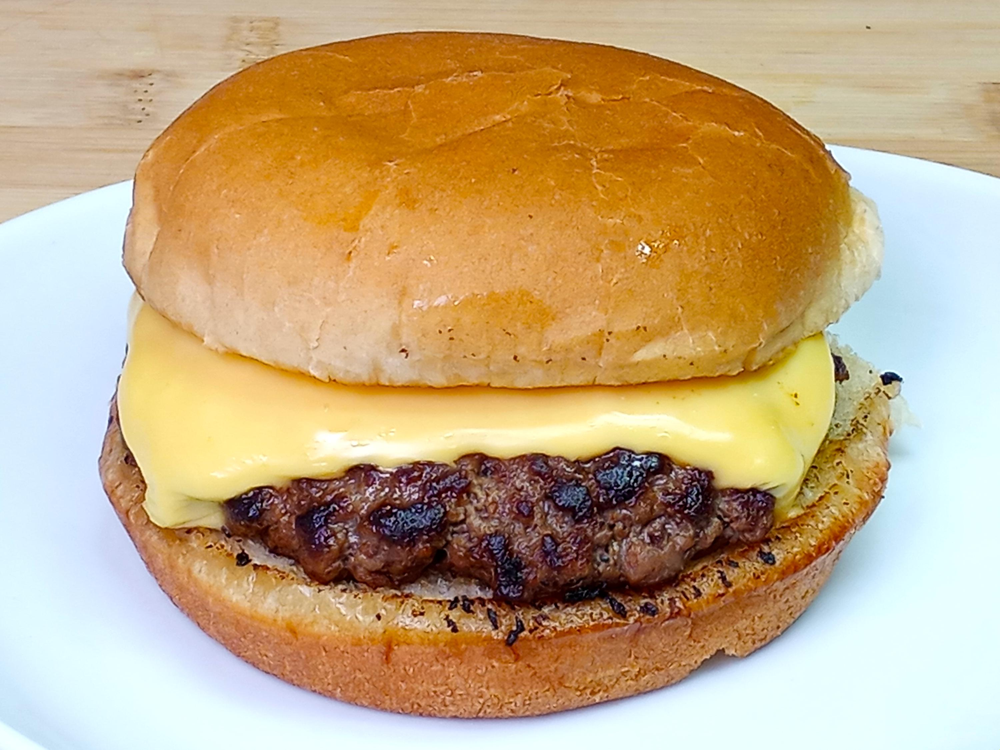

Classic Cheeseburger (Serves 4)

Description
A burger so good, it'll make your taste buds do a happy dance! A juicy beef patty, cheesy
goodness, and all your favorite fixings, sandwiched between a pillowy soft bun.
Main Ingredients
- 1.5lbs ground beef (80/20) blend recommended for juiciness
- 8 slices of American Cheese
Optional Toppings
- 8 slices of lettuce
- 8 slices of tomato
- 1 large onion, thinly sliced
Bun and Condiments
- 8 hamburger buns
- Ketchup
- Mustard
- Mayonnaise
Preparing Your Classic Cheeseburger
-
Prep the Patties
- Divide the ground beef into four equal portions.
- Form each portion into a patty, about 1 inch thick.
- Season both sides of the patties with salt and pepper.
-
Grill the Patties
- Preheat your grill to medium-high heat.
- Place the patties on the grill and cook for about 4-5 minutes per side, or until they reach your desired level of doneness.
- Top each patty with a slice of cheese and cook for an additional minute, or until the cheese is melted.
-
Assemble the Burgers
- Toast your hamburger buns on the grill for a few seconds per side.
- Place a cooked patty on the bottom bun.
- Add your desired toppings: lettuce, tomato, onion.
- Drizzle with ketchup, mustard, or mayonnaise, or a combination of all three.
- Top with the top bun.
Enjoy your delicious homemade cheeseburgers!
Tips for the Perfect Burger:
- Don't overwork the meat: Gently form the patties, avoiding over-mixing, to prevent tough burgers.
- Don't press down on the patties: Resist the urge to press down on the patties with a spatula, as this can cause the juices to escape.
- Let the meat rest: After cooking, let the patties rest for a few minutes before assembling the burgers. This allows the juices to redistribute.
Make it your own!
ou may also want to consider adding bacon, pickles, or other condiments to your burgers.
Adjust the quantities based on your preferences and the number of servings.